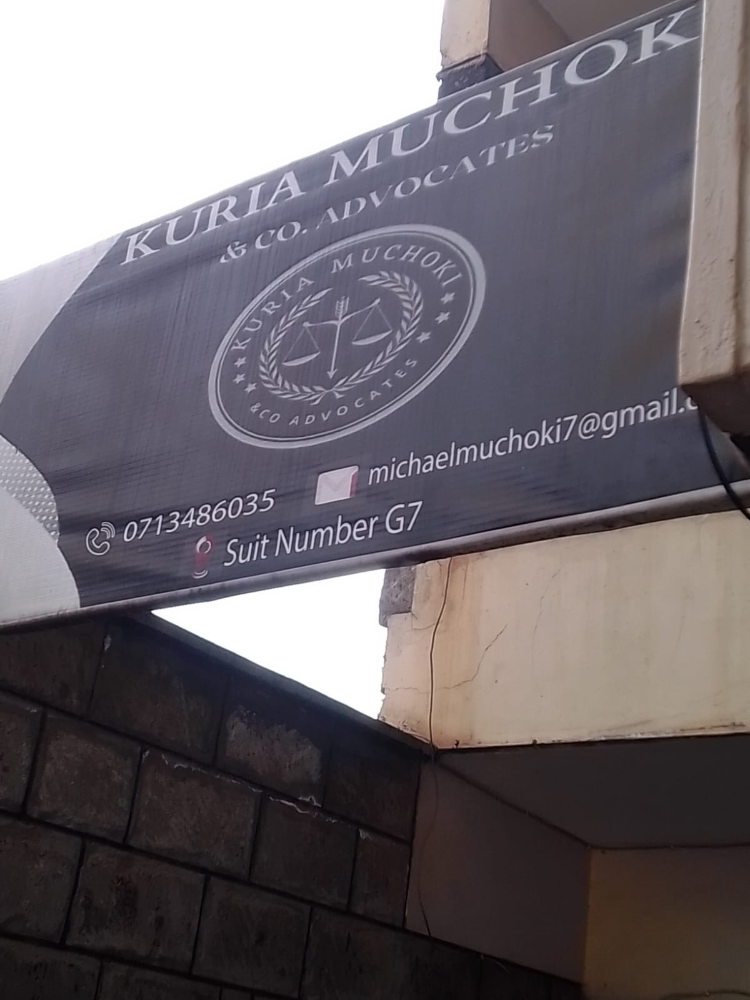

Integrity
Honest advice and responsible professional judgement.
The firm
A partner-led legal practice serving individuals, families and organisations from Kikuyu Town.
Kuria Muchoki & Co. Advocates approaches legal work with preparation, clarity and a practical understanding of what is at stake for each client.
The firm supports clients across disputes, property transactions, estate administration, family matters, business questions and contractual relationships. Our role is to help clients understand their position, consider the available legal routes and move forward with purpose.
Every instruction begins with careful listening. Advice is communicated directly, timelines and next steps are made clear, and representation remains focused on the client’s lawful objectives.
Our approach
The standard we bring to advice, preparation, communication and representation.
Honest advice and responsible professional judgement.
Complex legal questions explained in useful language.
Careful attention to facts, documents and legal options.
A service shaped around the matter and the person behind it.
Local and accessible
The firm’s location makes it accessible to clients in Kikuyu, Kiambu County and the wider Nairobi metropolitan area. Contact the office before visiting so the team can confirm your appointment and directions.
Plan your visit